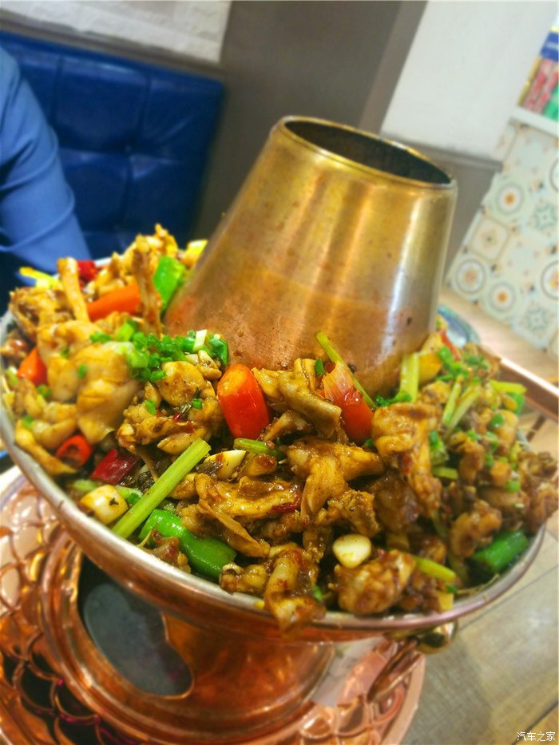

登顶上海之巅-Q2L带你换个角度看上海
汽车之家 2018-12-17行程安排
行程1 浦东海中心-浦电路 浦东海中心-浦电路
==========================
【出发时间】2018-10
【旅行周期】1-3天
【人均费用】5000-10000
说到海家印象肯定外滩望向浦东情景吧~~~
今天我要带你看个样海~~~
我们走起咯~~~

这样
还有这样

钻天
气势
帅极
~~~
真
蛮帅蛮帅
进气栅
霸气~~~
朋友新提Q2L~~~
之前从来没听说过奥迪还有Q2L~~~
看起来比Q3帅~~~
朋友刚刚提车还热乎连牌都没挂（挂牌也太难只能拿旧车换才有牌也醉）~~~~
这个红啊这个黄啊
真亮~~~~
你知道在这停车钱么哭
朋友说这车可
便宜
加
东西~~~
朋友
个细发人~~~
看细节就知道啦~~~
有科技感~~~
鹏展翅帅呆
日间行车灯造型未来感
足
全液晶显示屏哇~~~~~
能加
都加
真有追求
氛围灯晚
特别有感觉~~~
世界排名前几
楼
厦
海中心厦（Shanghai Tower）座超层标式摩天楼其设计度超过附海环球金融中心

模型真带劲
海中心厦有两个玻璃正面内外主体形状为内圆外角形象说就个管子外面套另个管子
海中心厦建筑外观呈螺旋式升建筑表面开口由底部旋转贯穿至顶部城市天际线
这
入口
旋转门
过
这扇门
就
速电梯
海中心厦继2016年4月底宣布部分试运营后位于楼第118层海之巅观光厅2017年4月26日起正式向公众开放
海之巅旅程开始
速电梯到达观光层
登
海之巅后
风光
海之巅观光厅位于海中心第118层垂直度达546米面积千余平方米呈角环形布局包裹落超透明玻璃幕墙可360度俯瞰海城市风貌
俯视旁边
环球金融中心
蛮帅
但
海中心
帅呀
游客可从位于海中心西北角（银城中路花园石桥路口）海之巅售票厅购买门票后从面观光主入口抵达B1层海之巅观光厅序展区这里设置形式样新颖互动展项参观完序展区后游客将经自动扶梯至B2层前往搭乘超速电梯只需55秒即可直达546米空开启巅峰之旅
对面就
外滩
说实话
有点晕
我恐
啊
参观完海之巅趁老来趟浦东专程吃个传说中美食~~~~
老城区炭烧牛蛙火锅~~~~~浦电路店~~~~离佰伴~~~
慕名而来
炭烧牛蛙火锅

口水流
停
两人份单层足够啦~~~
草莓
便宜
口味
~~~
车厘子
我
最爱~~~~